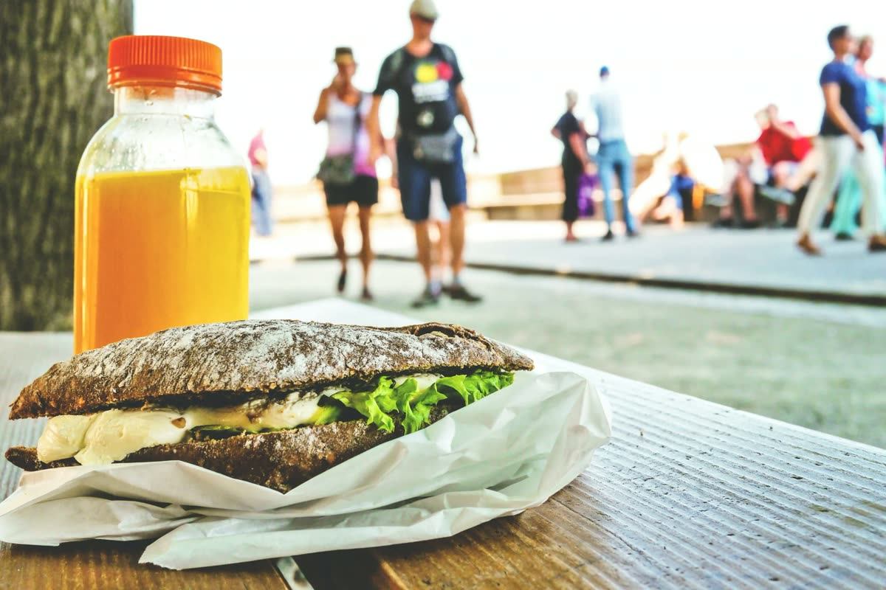
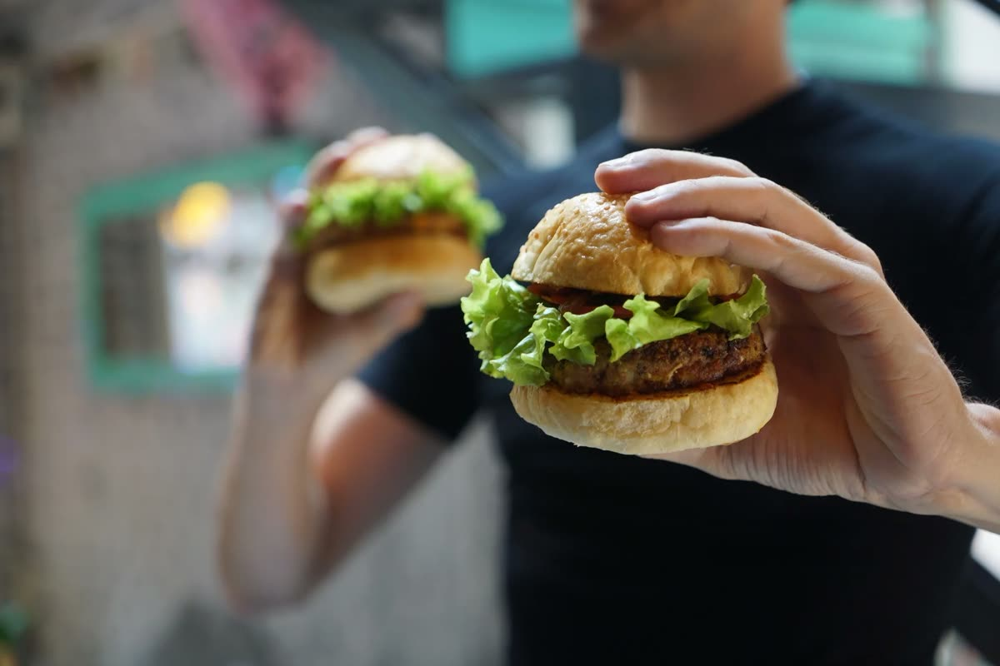

Marktplein 10 · Geldermalsen
Lunchroom
Old West
Van knapperige frietjes en snacks tot malse biefstuk en salades. Eet bij ons in het restaurant of op het terras aan het Marktplein, of haal het op. Reserveren hoeft niet.
Di t/m za vanaf 11:00, zondag vanaf 13:00, maandag gesloten
Restaurant & terras
Ruim 70 plaatsen binnen, ruim 60 op het terras aan het Marktplein. Gewoon binnenlopen, u hoeft niet te reserveren.
Bestellen & afhalen
Bestel via de website, de app, telefonisch of aan de kassa, en geniet thuis van onze maaltijden.
Zakelijk
Vergaderlunches, broodjes en overwerkmaaltijden, vers en met zorg bij uw bedrijf bezorgd.
Lunchen, dineren of lekker borrelen?
Bij ons in het restaurant of op het terras hoeft u niet te reserveren. Kom langs wanneer het u uitkomt: onze doorloopsnelheid is hoog, dus u hoeft zelden op een tafel te wachten. Onze medewerkers staan voor u klaar.
Restaurant
Plaats voor ruim 70 gasten. De wanden met prachtige foto's van Geldermalsen en omstreken nemen u mee terug in de tijd.
Terras
Op het gezellige Marktplein, met plaats voor ruim 60 gasten. Fietsers, inwoners en toeristen weten het te vinden. Even pauzeren tijdens een fietstocht door de Betuwe?

Thuis genieten van Old West
Ons menu is voor iedereen. Bestel op de manier die u het makkelijkst vindt en haal het op aan het Marktplein.
- Onlinebestellen.oldwest.nl
- Telefonisch0345 573 100
- App voor iPhoneApp Store
- App voor AndroidGoogle Play
Of bestel gewoon aan de kassa.

Broodjesservice & vergaderlunches
Tijdens een vergadering, cursus of werkdag moet er goed gegeten worden. Alle gerechten van de menukaart en onderstaande vergaderlunches kunt u laten bezorgen bij uw bedrijf, altijd vers en met zorg geleverd. Ook voor overwerkmaaltijden.
Bestellen: bel 0345 573 100 of mail naar bestellingen@oldwest.nl, met de gewenste datum, het tijdstip en uw gegevens.
Vergaderlunches, vanaf tien personen
De Linge
- 2 gesorteerde bolletjes
- 1 krentenbol met boter en suiker
- Melk en jus d'orange
€ 9,75 p.p. excl. btw
De Lek
- 2 gesorteerde bolletjes
- 1 gesorteerde pistolet
- Melk en jus d'orange
€ 11,25 p.p. excl. btw
De Waal
- 2 gesorteerde pistolets
- Melk en jus d'orange
€ 9,75 p.p. excl. btw
De Maas
- 2 gesorteerde bolletjes
- 1 broodje kroket met mosterd
- Soep
€ 11,75 p.p. excl. btw
De Schelde
- 1 gesorteerde pistolet en 1 bolletje
- 1 broodje kroket met mosterd
- Soep
€ 12,75 p.p. excl. btw
De Merwede
- 1 gesorteerde pistolet
- 1 broodje kroket met mosterd
- Soep en een stuk fruit
€ 12,25 p.p. excl. btw
De IJssel
- 2 gesorteerde pistolets
- Soep
- Melk en jus d'orange
€ 11,75 p.p. excl. btw
Extra pak melk of jus d'orange€ 3,95 excl. btw
Soep van de dag, als toevoeging bij een lunch€ 2,95 p.p. excl. btw
De cadeaubon die niet in de la blijft liggen
Het lekkerste cadeau voor familie en vrienden. Verras iemand op zijn verjaardag met een belevenis. Verkrijgbaar in verschillende bedragen vanaf € 7,50: kom langs en wij maken de bon voor u klaar.
Openingstijden
| Maandag | Gesloten |
|---|---|
| Dinsdag | 11:00 – 21:00 |
| Woensdag | 11:00 – 21:00 |
| Donderdag | 11:00 – 21:00 |
| Vrijdag | 10:00 – 21:00 |
| Zaterdag | 11:00 – 21:00 |
| Zondag | 13:00 – 21:00 |
Contact
Lunchroom Old WestMarktplein 10, 4191 AC Geldermalsen
0345 573 100
info@oldwest.nl
Bestellingen: bestellingen@oldwest.nl
Old West zoekt nieuwe collega's
We zoeken collega's, part- en fulltime, om ons team te versterken. Hoe meer collega's, hoe makkelijker we de roosters naar ieders zin kunnen maken.
Wat we je bieden
- Een gezellig team
- Een moderne cafetaria / lunchroom waar altijd wat te doen is
- Werktijden in overleg, aangepast aan jouw behoeften
- Eindejaarsbonus bovenop je salaris
Wat we van jou verwachten
- Enthousiast, sociaal en leergierig
- Geen 9-tot-5-mentaliteit
- Minimaal 2 diensten per week, waarvan 1 in het weekend